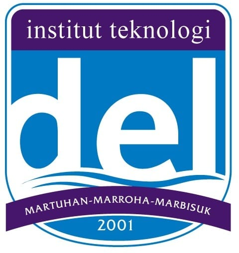

Manufacturing systems
Understanding production workflows, resource constraints, and opportunities for efficiency and quality improvement.
ENGINEERING MANAGEMENT · MANUFACTURING SYSTEMS · MEDAN, INDONESIA
Hello, I'm Ragil Marsiho.
Engineering Management Student / Manufacturing, Product Design & Optimization
“Driven by Curiosity, Guided by Data, Focused on Impact.”
I explore how product design, manufacturing systems, lean thinking, and data-driven process improvement can turn operational challenges into practical solutions.
CV download will be available when a verified document is provided.
MANUFACTURING / DESIGN / OPTIMIZATION
01 / ABOUT
I am an Engineering Management undergraduate student at Institut Teknologi Del with a strong interest in manufacturing systems, product design, process improvement, and technology-driven problem-solving.
Through my Production Systems Laboratory roles and leadership as President of HIMAMERA in 2025–2026, I have gained practical exposure to laboratory operations, production processes, lean principles, documentation, and team coordination.
I continue developing my skills in engineering analysis, product development, data analytics, and operational optimization. My goal is to bridge technical processes, user needs, and evidence-based decision-making to help improve how products and systems work.
PROFESSIONAL FOCUS
Understanding production workflows, resource constraints, and opportunities for efficiency and quality improvement.
Exploring practical engineering solutions through design thinking, experimentation, and structured process analysis.
Connecting data, lean approaches, and team coordination to support measurable operational progress.
02 / EDUCATION

UNDERGRADUATE PROGRAM
Institut Teknologi Del
03 / EXPERIENCE
A selection of teaching, operational, leadership, and coordination experiences.
04 / SELECTED WORK
Documented work in manufacturing quality, product development, sustainable engineering, and community impact.
Project cover images are AI-edited visual presentations of the supplied photos. For original documentation, request the unedited source photographs.
05 / CAPABILITIES
Skills are listed without proficiency ratings or years of experience.
06 / RESEARCH
PUBLICATIONS
Publication details have not been provided. This section will be updated when verified records are available.
07 / MORE
No verified certificates or awards were supplied for display.
No published articles were supplied. No publication claims are made here.
08 / CONTACT
Interested in manufacturing improvement, product development, engineering analysis, or collaborative projects? Feel free to get in touch.
GET IN TOUCH
ragilmarsiho3@gmail.com